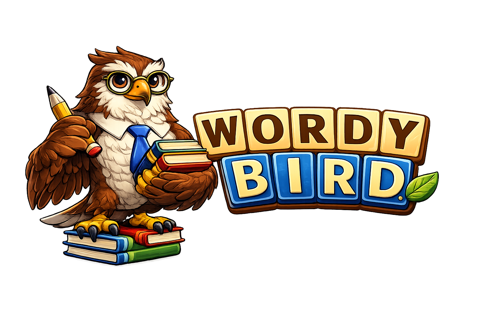

Terms of Service
These Terms of Service (“Terms”) govern your use of Wordy Bird (the “App”), a word puzzle game published by Nifty Robot (“we,” “us,” “our”), including the mobile app and the browser version at niftyrobot.org. By downloading, installing, or playing Wordy Bird, you agree to these Terms. If you don’t agree, please don’t use the App.
Who can use Wordy Bird
Wordy Bird is intended for a general audience. If you are under the age of majority where you live, you may use the App only with the involvement of a parent or guardian who agrees to these Terms on your behalf.
Your license to play
We grant you a personal, limited, non-exclusive, non-transferable, revocable license to download and use Wordy Bird for your own non-commercial entertainment, on devices you own or control, in line with these Terms and the rules of the store you got it from (Apple App Store or Google Play).
You agree not to:
- Copy, modify, resell, or redistribute the App or its content.
- Reverse engineer, decompile, or tamper with the App, except where the law expressly allows it.
- Cheat, use bots or automated tools, exploit bugs, or otherwise manipulate scores or the global leaderboard.
- Interfere with or disrupt the App, its servers, or other players’ experience.
- Use the App for any unlawful purpose.
In-app purchases
Wordy Bird is free to play. Optional in-app purchases, such as Remove Ads, are offered through the Apple App Store or Google Play and are processed by those stores under their own terms. Prices are shown in the store before you buy.
- Purchases unlock a feature or content for use within the App; they are licensed, not sold, and have no cash value.
- Refund requests are handled by the store you purchased from, according to its refund policy. This doesn’t limit any rights you have under applicable consumer law.
- If you reinstall the App or switch devices, you can restore eligible purchases using the “Restore Purchases” option or the store account you bought them with.
Advertising
The free version of Wordy Bird shows ads served by Google AdMob. Ads are provided by third parties, and we are not responsible for their content or for any products or services they promote. Our Privacy Policy explains what data ad services may collect.
Leaderboard and game data
Your scores, badges, streaks, and progress are stored on your device. If you take part in the global leaderboard, your score is submitted with an anonymous identifier. We may remove scores that appear to result from cheating or abuse. Game progress stored on your device may be lost if you uninstall the App or reset your device, and we can’t recover it.
Ownership
Wordy Bird, including its name, characters, artwork, sounds, code, and design, is owned by Nifty Robot or its licensors and protected by intellectual property laws. Except for the license above, no rights are granted to you.
Changes and availability
We may update, change, or discontinue features of the App at any time, for example to fix bugs, improve gameplay, or comply with law. We try to keep the App available, but we don’t guarantee it will always be uninterrupted or error-free, and online features such as the leaderboard may occasionally be unavailable.
Disclaimer
To the fullest extent permitted by law, Wordy Bird is provided “as is” and “as available,” without warranties of any kind, whether express or implied, including warranties of merchantability, fitness for a particular purpose, and non-infringement.
Limitation of liability
To the fullest extent permitted by law, Nifty Robot will not be liable for any indirect, incidental, special, consequential, or punitive damages, or for any loss of data or game progress, arising from your use of the App. Our total liability for any claim relating to the App is limited to the amount you paid us for the App in the 12 months before the claim.
Consumers in the EEA and UK
Nifty Robot acts as a trader in offering Wordy Bird. If you are a consumer in the European Economic Area or the United Kingdom, you benefit from mandatory consumer protection laws in your country of residence, including statutory rights relating to digital content. Nothing in these Terms limits or excludes those rights. The disclaimer and limitation of liability above apply only to the extent permitted by those laws, and we do not limit liability for death or personal injury caused by negligence, or for fraud.
Ending your use
You can stop using Wordy Bird at any time by uninstalling it. We may suspend or end your access to online features if you seriously or repeatedly break these Terms. Sections that by their nature should survive termination (such as ownership, disclaimers, and limitation of liability) will continue to apply.
App store terms
If you downloaded the App from the Apple App Store, Apple’s standard Licensed Application End User License Agreement also applies, and Apple is a third-party beneficiary of these Terms. If you downloaded it from Google Play, the Google Play Terms of Service also apply. Apple and Google are not responsible for the App or for support of it.
Changes to these Terms
We may update these Terms from time to time. When we do, we’ll update the effective date above, and material changes will be highlighted on this page. Continuing to use the App after changes take effect means you accept the updated Terms.
Contact
Questions about these Terms? Email support@niftyrobot.org.